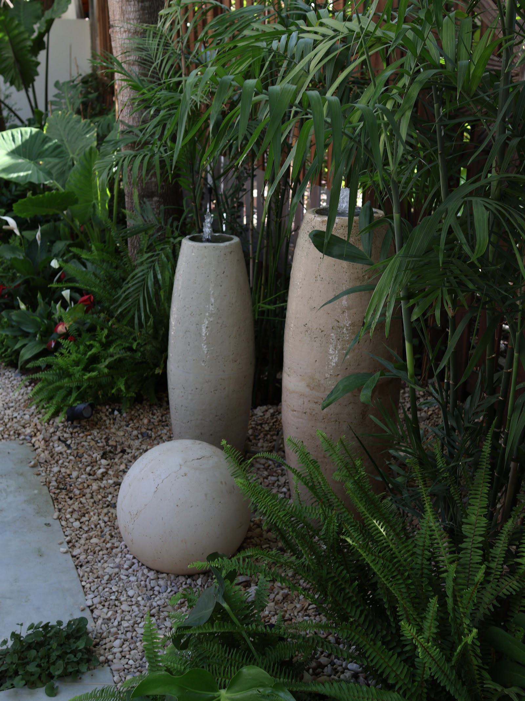
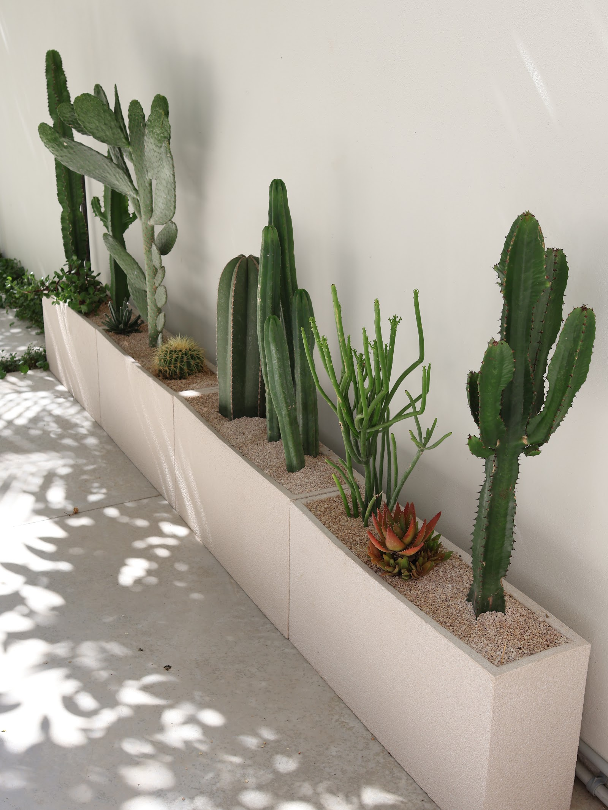
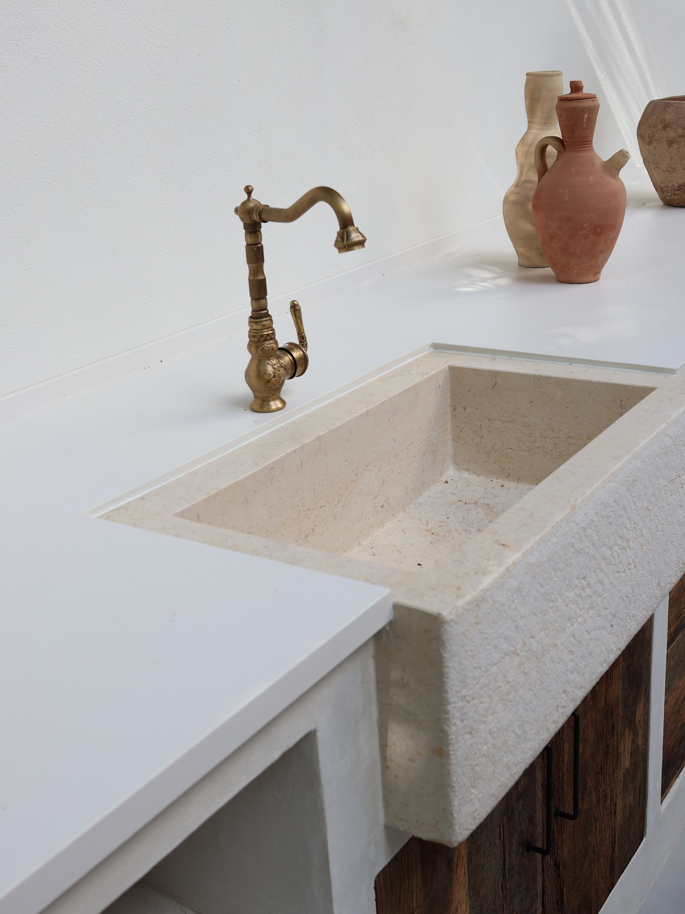
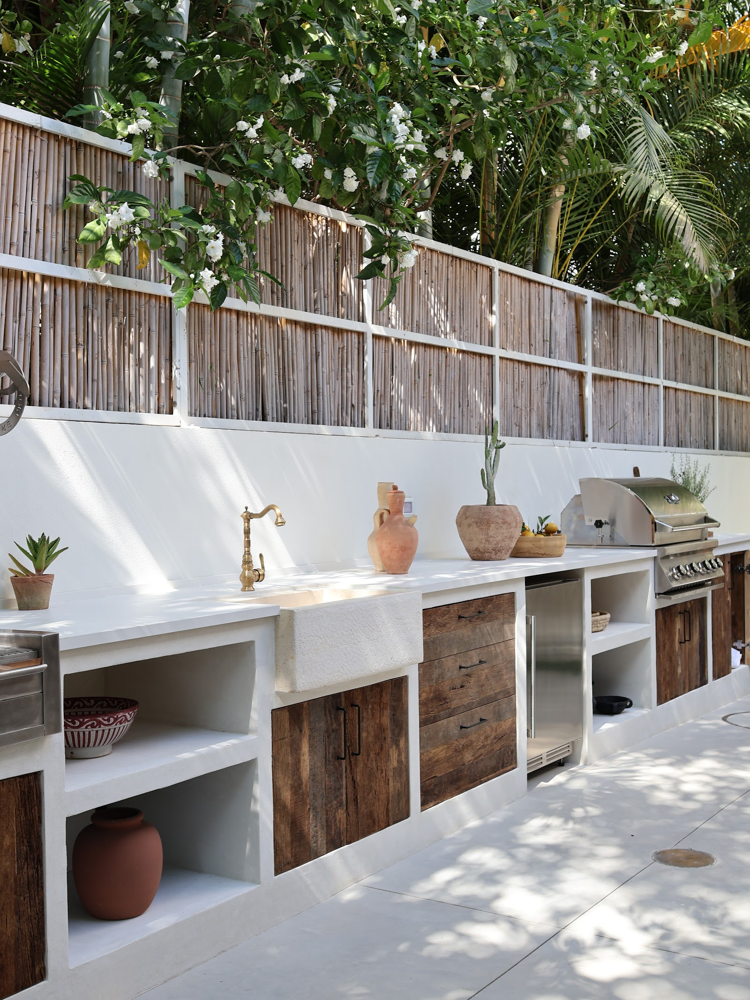
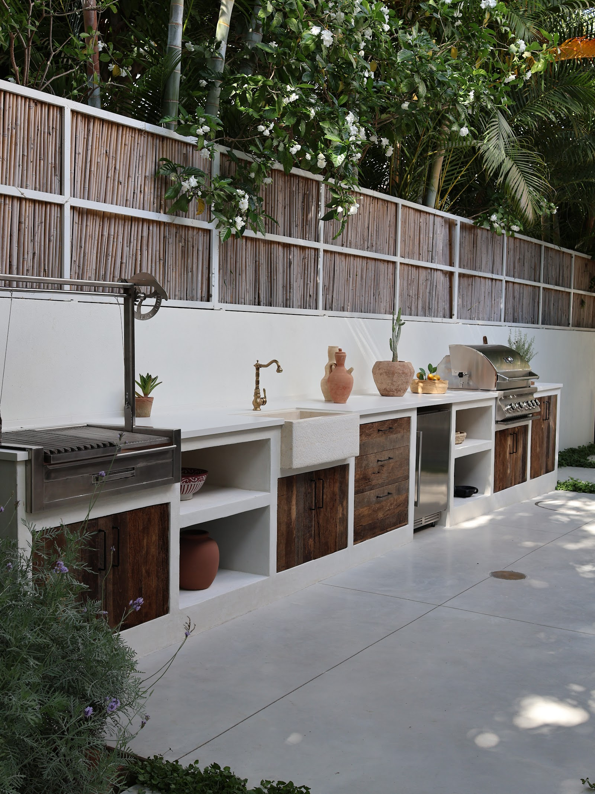
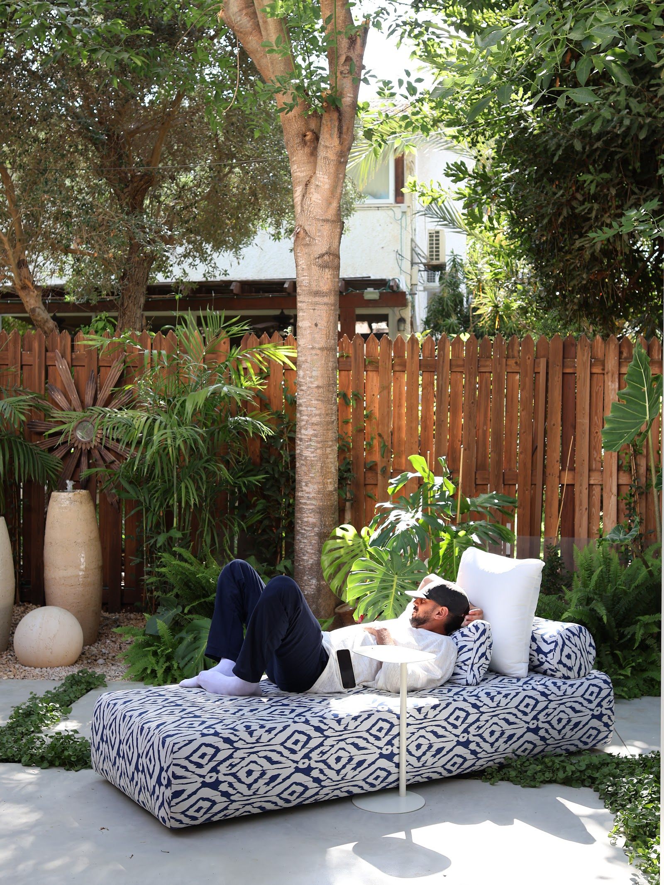
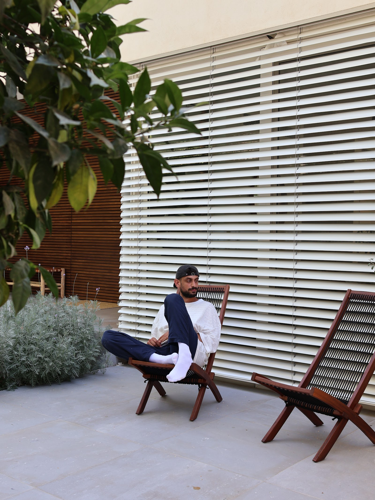
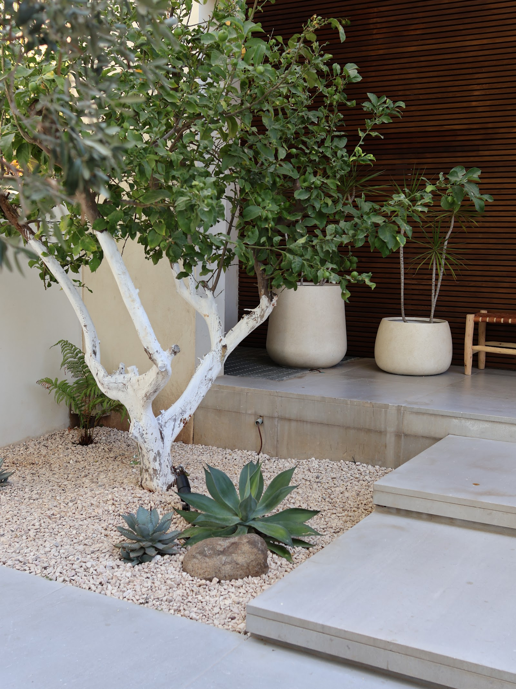
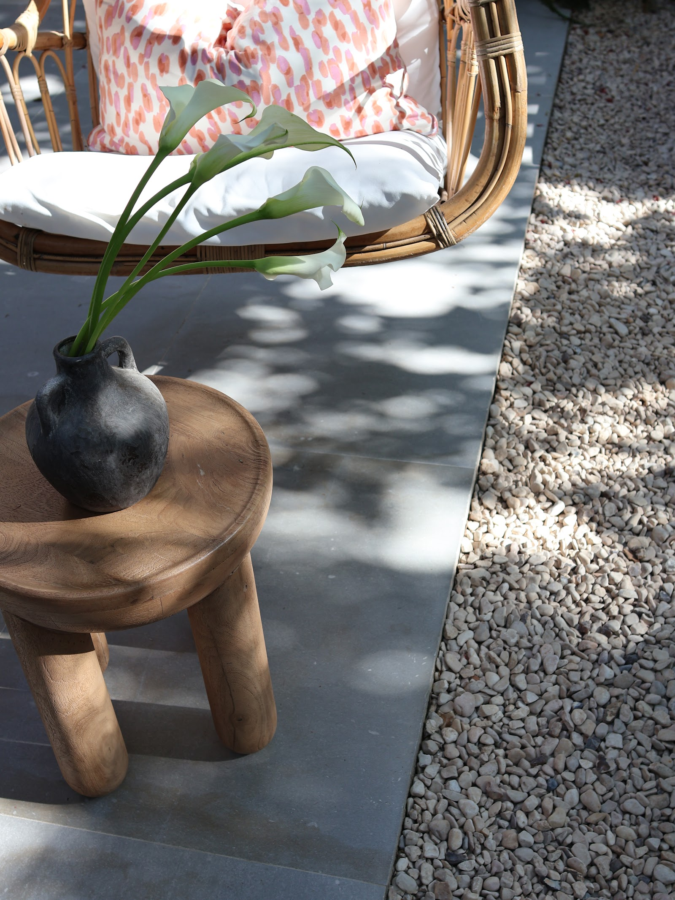
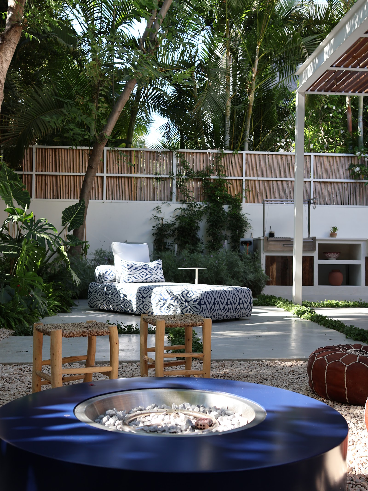

001 · Private Residence
White Jungle
The closest to my hands. Stone, green and light, composed into a single breath. A private garden where every line was drawn to slow the people who live in it, to give them somewhere to land at the end of a day.
- Type
- Private residence
- Place
- Israel
- Year
- 2025








